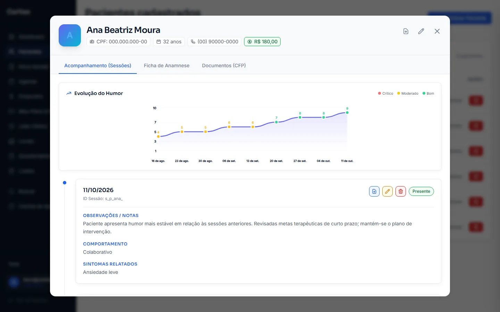
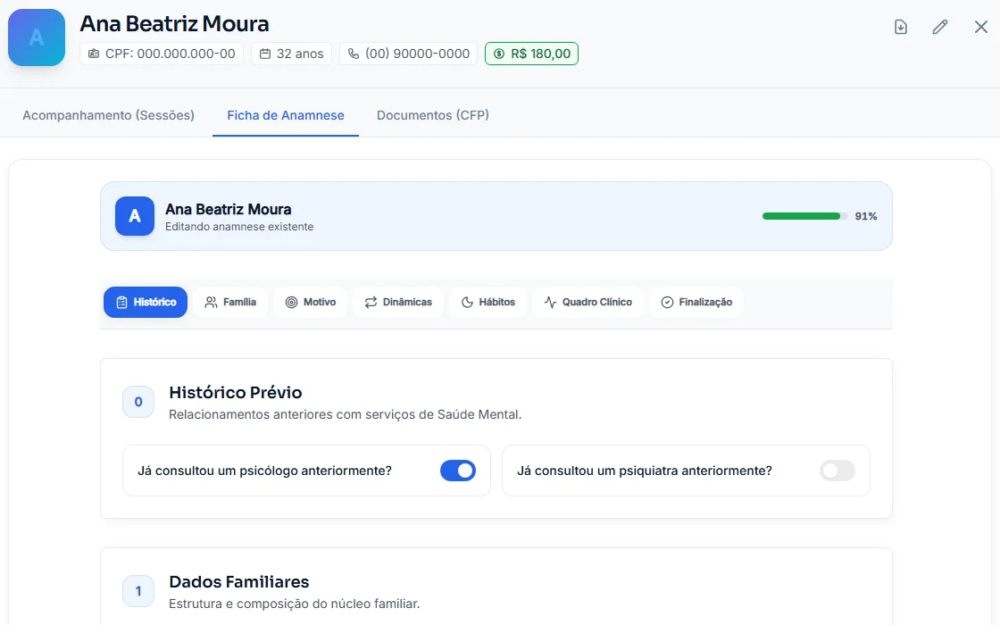

CARITAS Plataforma clínica para psicólogas e psicólogos · desenvolvida pela NOXXDClinical platform for psychologists · built by NOXXD
Zelo clínico, do acolhimento ao documento. Clinical care, from first session to signed document.
Prontuário eletrônico seguro, anamnese estruturada, resumo clínico com I.A., documentos oficiais do CFP e agenda com link público em uma única interface. A secure electronic record, structured intake, AI clinical summaries, official CFP documents and a public booking link in one interface.
Link público de agendamentoPublic booking link
/agendar/:slug
- CFP Resolução 06/2019Resolution 06/2019
- LGPD dados sensíveis de saúdesensitive health data
- 4,55 / 5 em heurísticas de Nielsenon Nielsen heuristics
Anamnese guiada em 7 etapasGuided 7-step intake
- Histórico prévioPrior care
- Dados familiaresFamily
- Motivo da consultaReason for care
- Dinâmicas de vidaLife dynamics
- Hábitos e rotinaHabits and routine
- Quadro clínicoClinical picture
- FinalizaçãoWrap-up
- 4,55 / 5
- em auditoria de usabilidade por heurísticas de Nielsenin a Nielsen-heuristics usability audit
- 5 anos yrs
- de guarda obrigatória do prontuário (CFP)years of mandatory record retention (CFP)
- 7 dias days
- de quarentena na lixeira antes de removerdays of trash quarantine before removal
- 8
- psicólogos por clínica sob um líder clínicopsychologists per clinic under one clinic lead
Menos papelada, mais sessãoLess paperwork, more session time
Um prontuário psicológico que organiza o histórico do paciente e salva tudo sozinho, para a atenção ficar no atendimento.A psychological record that organizes patient history and saves itself, so attention stays on the session.
Criador de questionários personalizadosCustom questionnaire builder
- Texto curtoShort text
- Texto longoLong text
- Múltipla escolhaMultiple choice
- Lista suspensaDropdown
- Escala 1 a 101 to 10 scale
- DataDate
-
Prontuário eletrônicoElectronic record
Linha do tempo de sessões, temas trabalhados e anexos, com registro de presença, técnicas e tarefas de casa.Session timeline, topics and attachments, with attendance, techniques and homework logged.
-
Auto-salvamentoAutosave
Formulários longos salvam em tempo real, sem perder nada se a rede oscilar no meio da sessão.Long forms save in real time, so nothing is lost if the connection drops mid-session.
-
Busca globalGlobal search
Pacientes e comandos com Ctrl + K; Ctrl + S salva a evolução em edição.Patients and commands with Ctrl + K; Ctrl + S saves the note in progress.
Resumo clínico com I.A., julgamento humanoAI clinical summaries, human judgment
As anotações da sessão viram um resumo técnico padronizado, em 3ª pessoa e com terminologia clínica, para o profissional revisar.Session notes become a standardized technical summary, in the third person and with clinical terminology, for the professional to review.
- OpenAI GPT-4o-mini, sem substituir a avaliação do psicólogoOpenAI GPT-4o-mini, never replacing the psychologist's assessment
- Evolução da escala de humor do paciente ao longo do tempoPatient mood scale tracked over time
- Hipóteses clínicas e técnicas interventivas registradas por sessãoClinical hypotheses and interventions recorded per session
Resumo gerado · demonstraçãoGenerated summary · demo
Paciente relata melhora na qualidade do sono após a aplicação da técnica de higiene do sono. Apresenta discurso organizado e afeto congruente. Mantida a tarefa de registro diário de pensamentos automáticos.The patient reports better sleep quality after applying the sleep hygiene technique. Speech is organized and affect is congruent. The daily automatic-thoughts journal assignment is maintained.

- Declaração PsicológicaPsychological StatementCRP 00/000000
- Atestado PsicológicoPsychological CertificateCRP 00/000000
- Relatório e EncaminhamentoReport and ReferralCRP 00/000000
- Recibo de ReembolsoReimbursement ReceiptCRP 00/000000
- Prontuário Total em PDFFull Record PDFCRP 00/000000
Documentos oficiais do CFP em um cliqueOfficial CFP documents in one click
PDFs padronizados conforme a Resolução CFP nº 06/2019, com cabeçalho, número de CRP e formatação técnica.Standardized PDFs under CFP Resolution 06/2019, with letterhead, CRP license number and technical formatting.
- Declaração e atestadoStatement and certificate · comparecimento, acompanhamento e aptidão.attendance, follow-up and fitness.
- Relatório e encaminhamentoReport and referral · para médicos, psiquiatras e escolas.for physicians, psychiatrists and schools.
- Recibo de reembolsoReimbursement receipt · planos de saúde e Imposto de Renda.health insurers and income tax.
- Prontuário totalFull record · cópia do histórico para perícias ou guarda física.a copy of the history for expert reviews or physical archiving.
Anamnese completa, da primeira sessão ao plano terapêuticoA complete intake, from first session to treatment plan
Um roteiro estruturado em 7 etapas, no ritmo da entrevista clínica: o psicólogo navega pelas seções e vê o que ainda falta preencher.A structured 7-step script that follows the clinical interview: the psychologist moves between sections and sees what is still missing.

- Adulto, infanto-juvenil ou seu modeloAdult, child and adolescent, or your own · a versão adolescente inclui gestação, desenvolvimento e escola.the adolescent version adds pregnancy, development and school.
- Rascunho automáticoAutomatic draft · a ficha se salva sozinha e pode ser retomada depois.the form saves itself and can be resumed later.
- Campos em aberto à vistaOpen fields in sight · marcadores nos campos vazios e percentual de preenchimento.markers on empty fields and a completion percentage.
- Exportação em PDFPDF export · a anamnese registrada vira documento para o prontuário.the recorded intake becomes a document for the record.
Sigilo e conformidade por padrãoConfidentiality and compliance by default
Dados pessoais sensíveis de saúde tratados conforme a LGPD (Art. 5º, II e Art. 11) e as resoluções do Conselho Federal de Psicologia.Sensitive personal health data handled under the LGPD (Art. 5, II and Art. 11) and Federal Council of Psychology resolutions.
Guarda de 5 anos5-year retention
Exclusão cadastral vira anonimização: CPF e telefone saem, o prontuário exigido pelo CFP permanece íntegro.Account deletion becomes anonymization: ID and phone are removed, while the CFP-mandated record stays intact.
Trilha de auditoriaAudit trail
Log append-only de visualizações, logins, alterações e exportações (Art. 37 da LGPD).Append-only log of views, logins, edits and exports (LGPD Art. 37).
Isolamento por profissionalPer-professional isolation
Multi-tenancy com Row Level Security: cada psicólogo vê apenas os próprios pacientes e finanças.Multi-tenancy with Row Level Security: each psychologist sees only their own patients and finances.
Verificação em duas etapasTwo-factor authentication
2FA, dispositivo confiável e encerramento automático de sessão por inatividade.2FA, trusted devices and automatic sign-out on inactivity.
Lixeira de 7 dias7-day trash
Registros clínicos apagados ficam em quarentena segura antes de qualquer remoção.Deleted clinical records stay in secure quarantine before any removal.
Líder clínicoClinic lead
Gestão de até 8 psicólogos com métricas agregadas, sem quebrar o sigilo das anotações.Manage up to 8 psychologists with aggregate metrics, without breaking note confidentiality.
Avaliado por heurísticas de Nielsen com nota 4,55 / 5,00 em auditoria técnica de usabilidade.Scored 4.55 / 5.00 in a technical usability audit using Nielsen's heuristics.
Perguntas frequentesFrequently asked questions
O que acontece se um paciente pedir exclusão?What happens if a patient asks to be deleted?
O cadastro é anonimizado: CPF e telefone saem, mas o prontuário fica guardado pelos 5 anos exigidos pelo CFP.The account is anonymized: ID and phone are removed, but the record is kept for the 5 years the CFP requires.
A I.A. substitui a minha avaliação?Does the AI replace my assessment?
Não. O GPT-4o-mini organiza suas anotações num resumo técnico para você revisar; a decisão clínica é sempre sua.No. GPT-4o-mini turns your notes into a technical summary for you to review; the clinical decision is always yours.
Como o paciente agenda uma sessão?How does a patient book a session?
Pelo seu link público em /agendar/seu-nome: ele escolhe um horário livre e você confirma pelo WhatsApp.Through your public link at /agendar/your-name: they pick an open slot and you confirm over WhatsApp.
Funciona para clínicas com vários psicólogos?Does it work for clinics with several psychologists?
Sim. O perfil Líder Clínico acompanha até 8 psicólogos com métricas agregadas, sem acesso às anotações confidenciais.Yes. The Clinic Lead profile follows up to 8 psychologists with aggregate metrics, with no access to confidential notes.
Um consultório inteiro, com cuidadoA whole practice, handled with care
Fale com a NOXXD para conhecer o CARITAS ou construir uma plataforma clínica sob medida.Talk to NOXXD to see CARITAS or build a custom clinical platform.